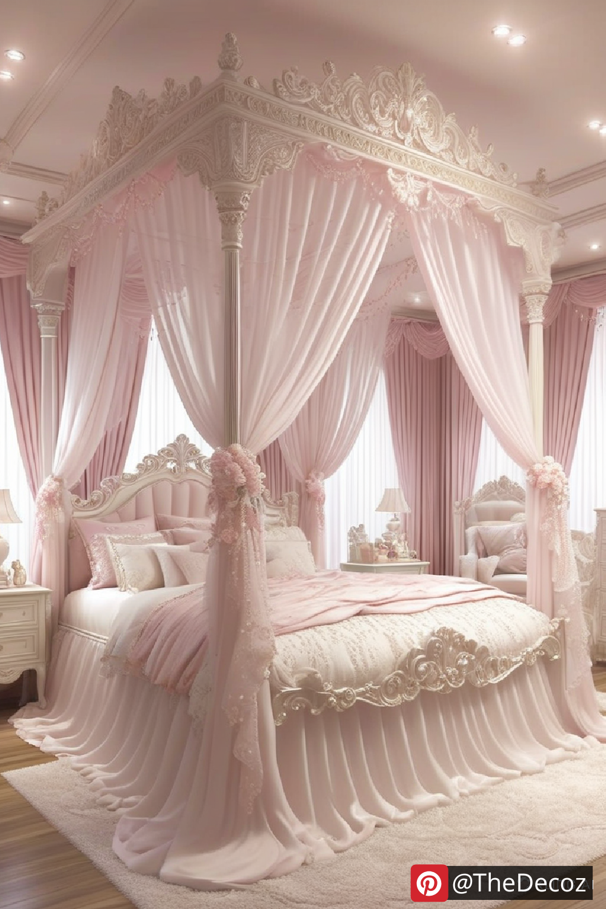
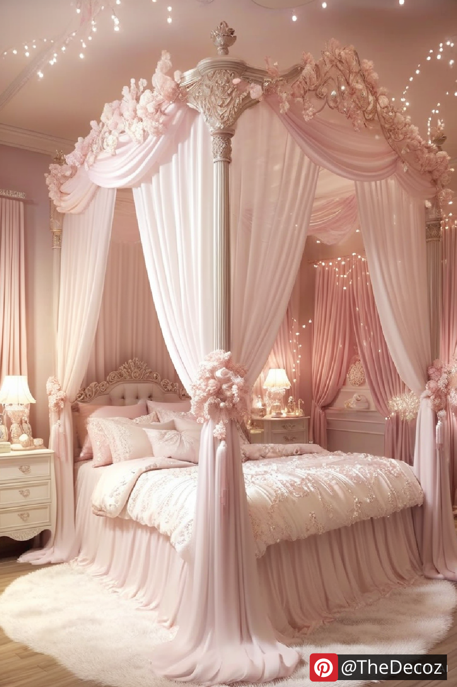
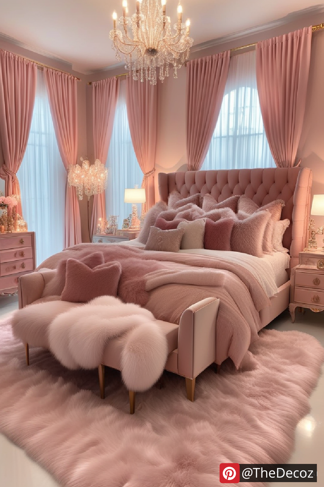
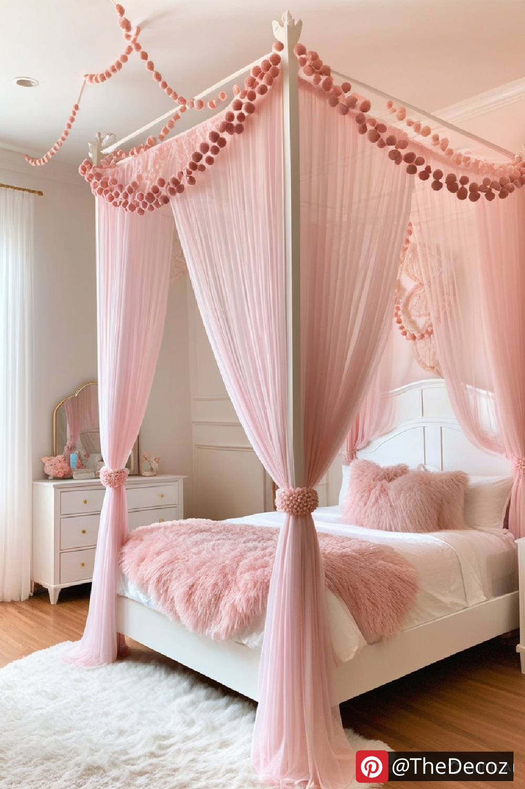
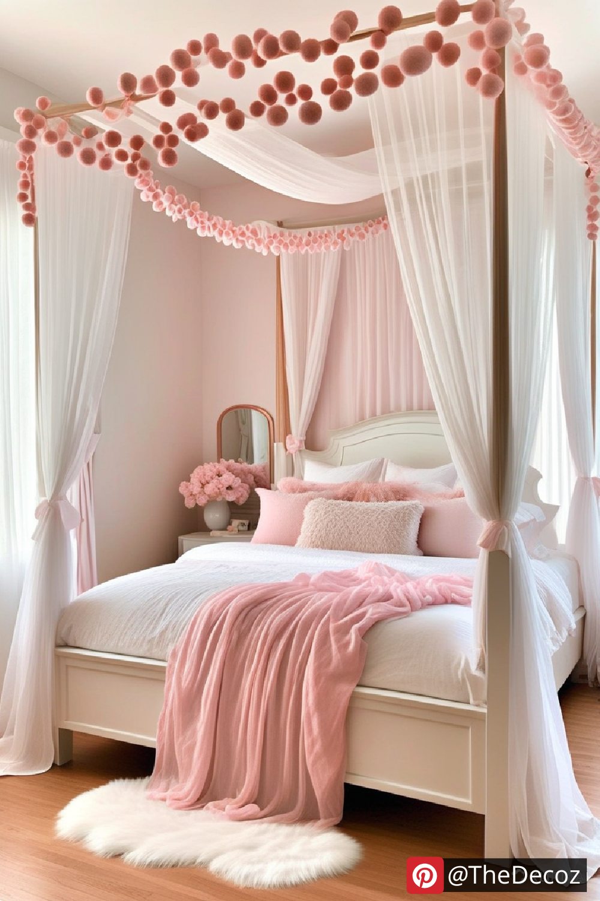

Creating the perfect princess room decor is every parent’s dream for their little one. A well-decorated princess-themed bedroom not only enhances a child's imagination but also provides a magical space for relaxation and creativity. Whether you're designing from scratch or revamping an existing room, this guide will help you achieve a regal transformation effortlessly.
The foundation of any princess room decor starts with a dreamy color palette. Soft pastels like pink, lavender, mint green, and light blue create a delicate and enchanting ambiance. If you want a more royal feel, consider incorporating gold, silver, or white accents to give the room a luxurious touch.
A princess-inspired bedroom isn’t complete without a grand bed. Look for canopy beds, ornate headboards, or even a castle-shaped bed frame. Opt for bedding that features delicate ruffles, lace, or floral prints to add an elegant touch. Complement the bed with elegant furniture such as a vintage vanity, a regal dresser, and a plush seating area.
Transform the walls into a magical backdrop with wallpapers featuring castles, fairy tale characters, or sparkling stars. Wall decals with inspirational quotes like "Dream Big, Little Princess" can add a personal and motivational touch. A statement wall mural of a castle or enchanted forest can also enhance the fairy tale theme.
Lighting plays a crucial role in setting the right mood for a princess-themed room. Chandeliers with crystal accents, fairy lights, and lamps shaped like crowns or tiaras create a cozy and magical atmosphere. Consider adding nightlights in fun shapes, like stars or moons, to give the room a dreamy glow at bedtime.
To complete the princess room decor, add accessories that enhance the theme. Decorative cushions shaped like crowns, castles, or hearts bring charm to the space. Plush rugs with royal motifs, such as fleur-de-lis or damask patterns, add warmth and texture. Display princess dolls, books, and keepsakes on floating shelves or inside glass cabinets for an elegant touch.
Personalizing the space makes it even more special. Customized name signs, monogrammed pillows, or framed photos in ornate frames bring a unique touch to the room. A DIY dress-up station with princess costumes and accessories encourages imaginative play and adds a functional element to the decor.
Adding a canopy above the bed creates an instant princess-like feel. Sheer, flowy fabrics like tulle or chiffon draped over the bed provide a dreamy and elegant effect. Matching curtains with tiebacks in the shape of bows or flowers complete the look and give the room a polished appearance.
Keeping a princess room tidy can be challenging, but stylish storage solutions make organization easy. Consider using decorative storage boxes, elegant bookshelves, and tufted storage ottomans to keep toys, clothes, and accessories neatly tucked away while maintaining the room's aesthetic appeal.
Designing a princess-themed bedroom is all about creating a space that feels magical, elegant, and comfortable for your child. By carefully selecting the right colors, furniture, decor, and personal touches, you can transform any room into a fairy tale kingdom. Whether you opt for a full royal makeover or small decorative accents, your little princess will surely love her enchanting sanctuary.
With these creative ideas, you can achieve a stunning princess room decor that brings joy and wonder to your child’s everyday life.
    